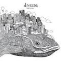
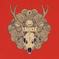

요네즈 켄시 안내
일본의 싱어송라이터이자 일러스트레이터. J-POP 씬을 가장 대표하며, 가장 큰 인기를 끌고 있는 아티스트

diorama

YANKEE
j-pop
J-POP은 기존의 일본 대중가요가 서양 대중음악에 영향을 받아 일본 문화와 융화되어 탄생한 대중음악
j-pop
J-POP은 일본 대중음악계에서 크게 흥행한 팝 스타일 장르를 묶은 용어로 쓰였다. 현재는 주로 일본 대중음악 전체를 총칭하는 용어